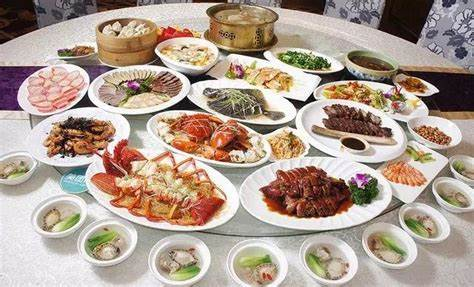

闽菜简介

中国八大菜系之一
风味特点： 鲜甜清淡、甜酸调和、汤菜为魂等
烹调方法： 刀工精细、汤煨与糟制、多样技法等技艺为主
起源地区： 以福州为核心，融合闽东、闽南、闽西等地方风味，形成“山海并馔”体系
起源时间：
远古萌芽：昙石山遗址（5000年前）陶器证明早期煮食文化。
中原融合：两晋南北朝至唐末，中原移民带入红曲、黄酒等技艺，奠定调味基础。
宋元成型：海上贸易兴盛，引入海外食材与技法，如沙茶酱、咖喱的应用。
清末鼎盛：福州“聚春园”等名店崛起，佛跳墙等名菜成为国宴代表。
主要食材： 山珍、海味、特色调料等
主要菜式： 福州经典、闽南风味、闽西客家、创新融合等
主要名宴： 佛跳墙宴、簪花宴（丰泽）、刺桐宴、郑和家宴等
了解更多


福州传统刀工名菜，猪肝厚切后猛火爆炒，外焦里嫩，酸甜酱汁裹挟嫩滑口感，毫无腥味。火候把控极严，体现闽菜对鲜嫩与调味的极致追求
南荣
厦门同安宴席“压轴菜”，整块五花肉配香菇、虾米慢炖至酥烂，肥而不腻，入口即化。象征富足圆满，曾亮相央视获赞“如巧克力般醇厚”
violet
闽南药膳代表，老姜与番鸭以麻油、米酒同煲，姜香渗入骨酥肉烂，驱寒暖胃。泉州做法汤润，厦门偏干香，秋冬滋补首选
马楚
闽菜“宴席之王”，集鲍鱼、海参等数十种山珍海味煨制，汤色金黄浓醇，荤香馥郁。国宴级美味，制作繁复，被誉为“天下第一汤”
赖旺财